Personajes mas populares
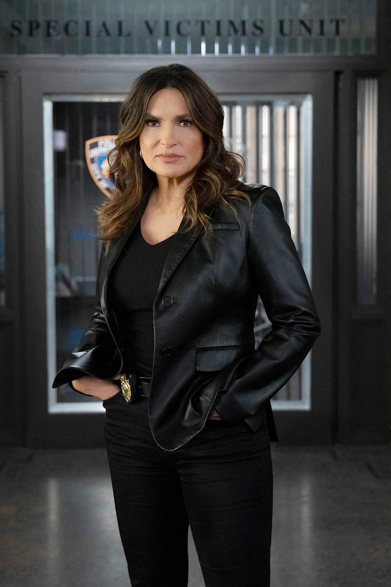
Olivia Benson — Mariska Hargitay Protagonista principal de la serie. Comienza como detective y llega a convertirse en capitana de la unidad. Es reconocida por su empatía, liderazgo y compromiso con las víctimas.
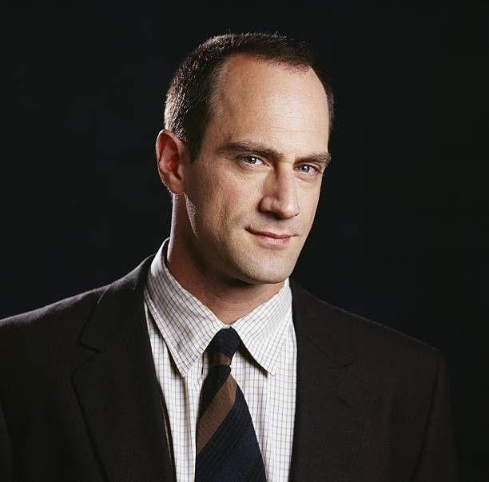
Elliot Stabler — Christopher Meloni Detective y compañero histórico de Olivia Benson. Se caracteriza por su personalidad impulsiva, carácter fuerte y dedicación a su trabajo.
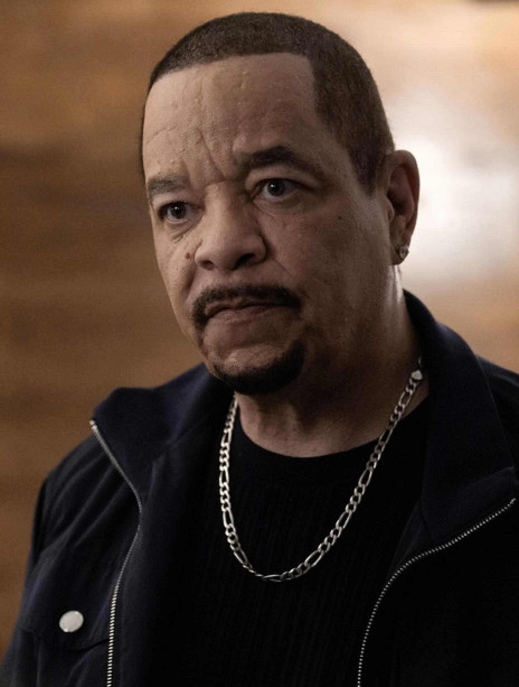
Odafin Fin Tutuola — Ice-T Detective y posteriormente sargento de la unidad. Es uno de los personajes más longevos y se destaca por su experiencia y lealtad.
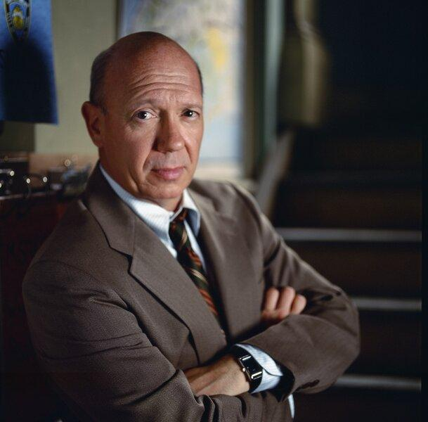
Donald Cragen — Dann Florek Capitán original de la Unidad de Víctimas Especiales. Fue el principal supervisor del equipo durante sus primeras quince temporadas.
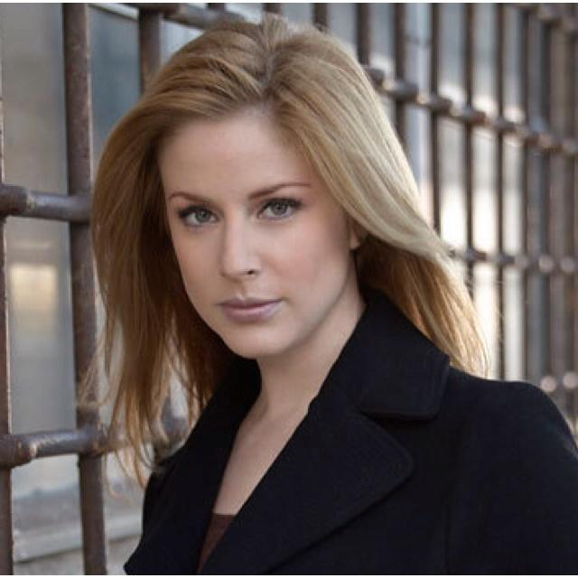
Casey Novak — Diane Neal Fiscal que se caracteriza por su carácter firme y su perseverancia para conseguir condenas en casos difíciles.
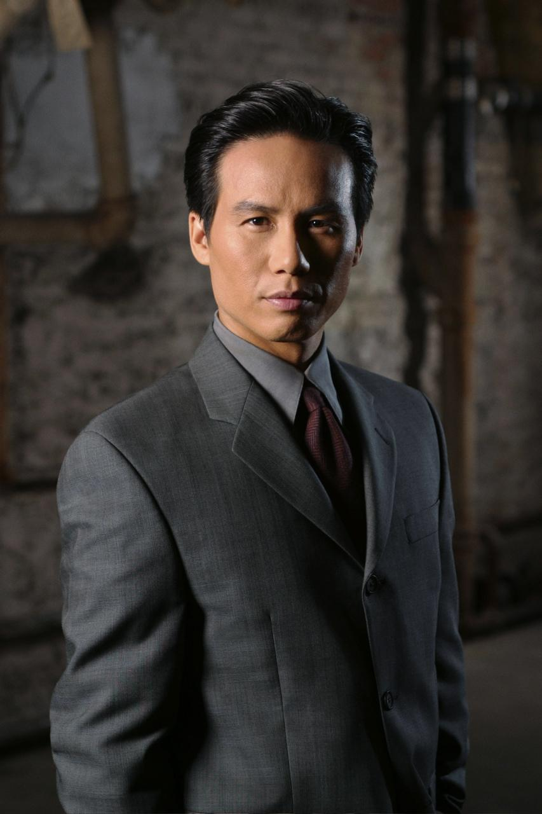
George Huang — BD Wong Psiquiatra especializado que colabora con la unidad. Aporta conocimientos psicológicos para comprender el comportamiento de sospechosos y víctimas.
-
John Munch — Richard Belzer Detective reconocido por su inteligencia, sarcasmo y capacidad de análisis. Fue uno de los integrantes originales de la unidad.
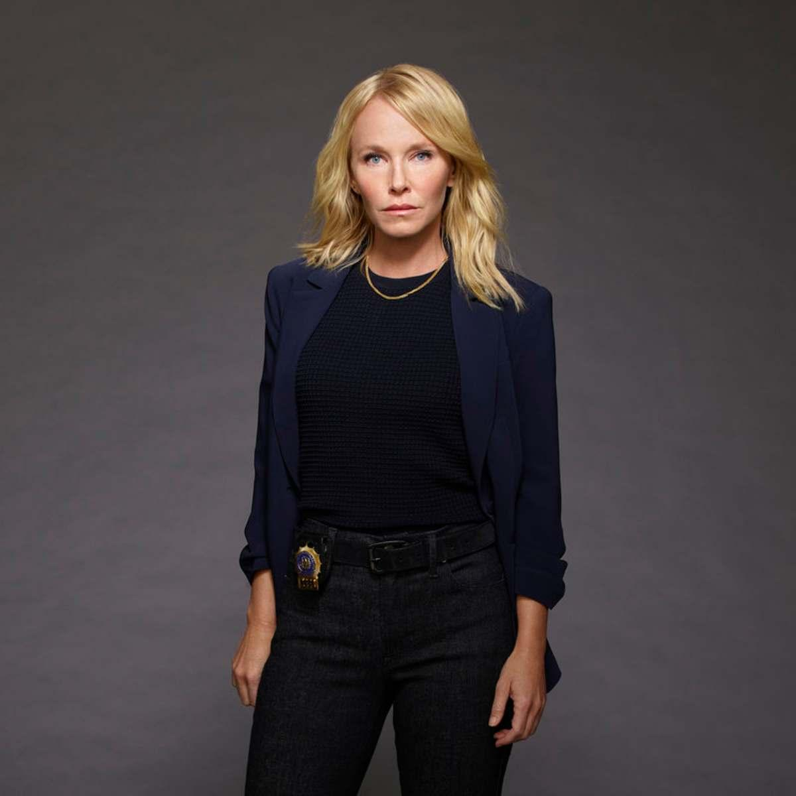
Amanda Rollins — Kelli Giddish Detective que se incorpora durante la temporada 13. Se destaca por su experiencia investigativa y por el desarrollo de su historia personal.
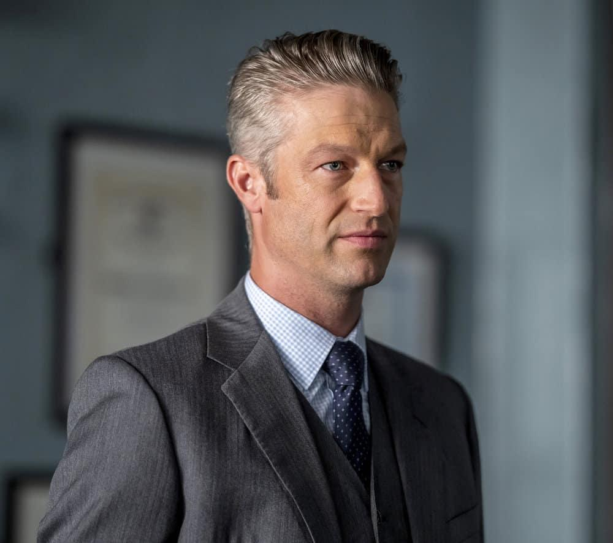
Dominick Sonny Carisi — Peter Scanavino Comienza como detective y posteriormente se convierte en fiscal. Es uno de los personajes importantes de las etapas más recientes.
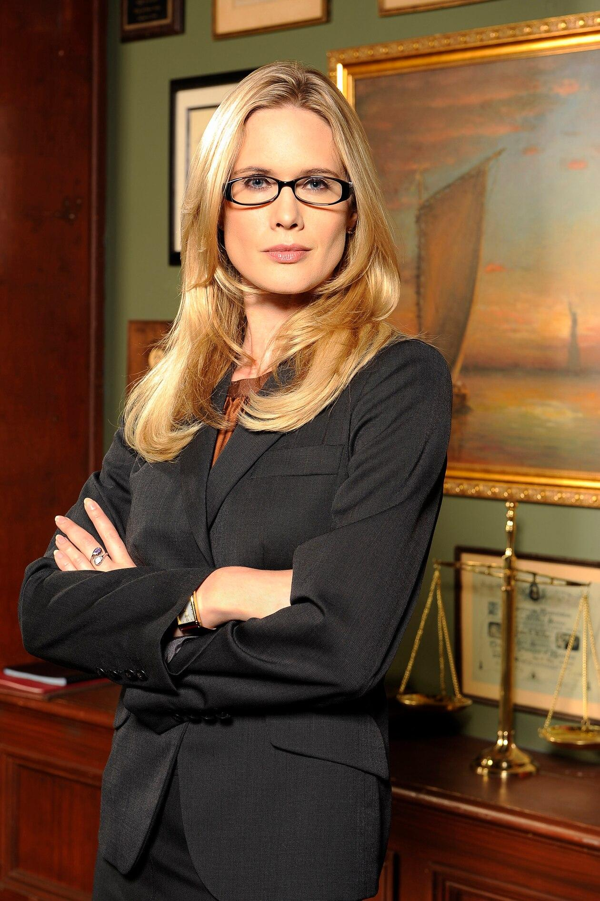
Alexandra Cabot — Stephanie March Fiscal que trabaja junto a la unidad. Es conocida por su determinación y compromiso con la defensa de las víctimas
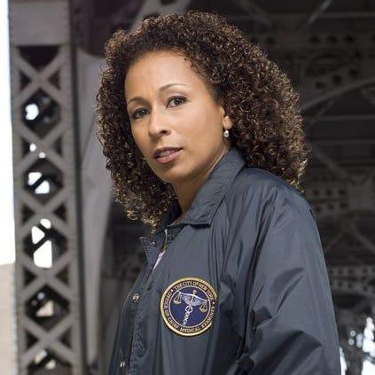
Melinda Warner — Tamara Tunie Médica forense que trabaja junto a los detectives, realizando autopsias y análisis médicos fundamentales para las investigaciones.
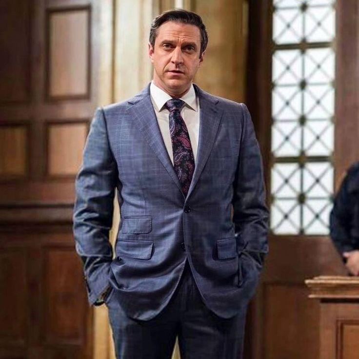
Rafael Barba — Raúl Esparza Fiscal reconocido por su inteligencia, determinación y habilidad para afrontar juicios complejos. Es uno de los fiscales más recordados de la serie.